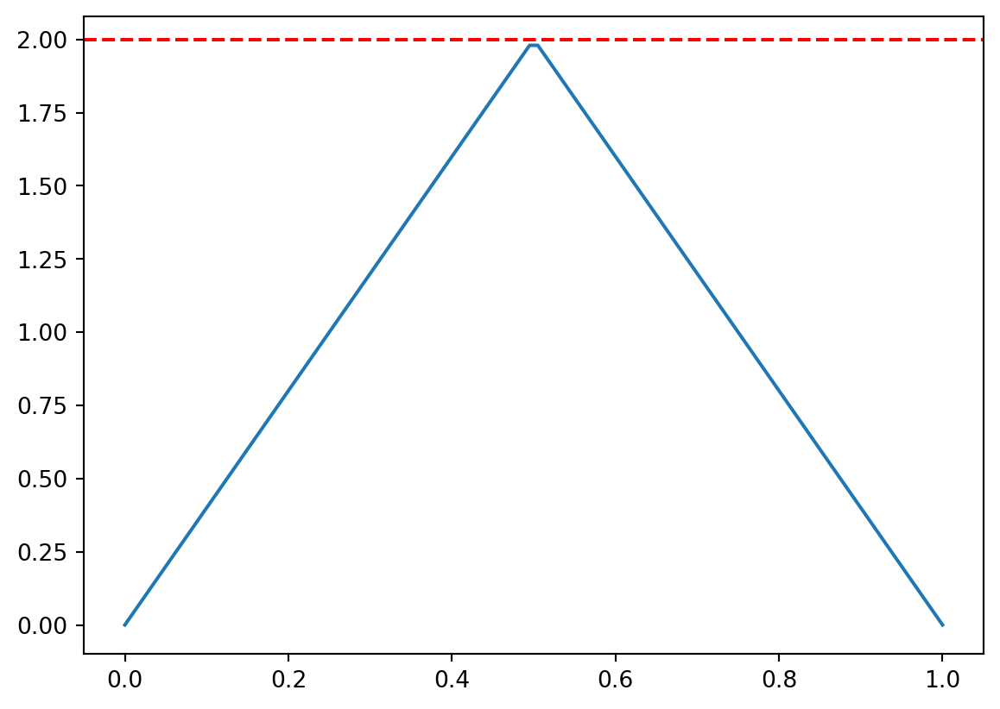
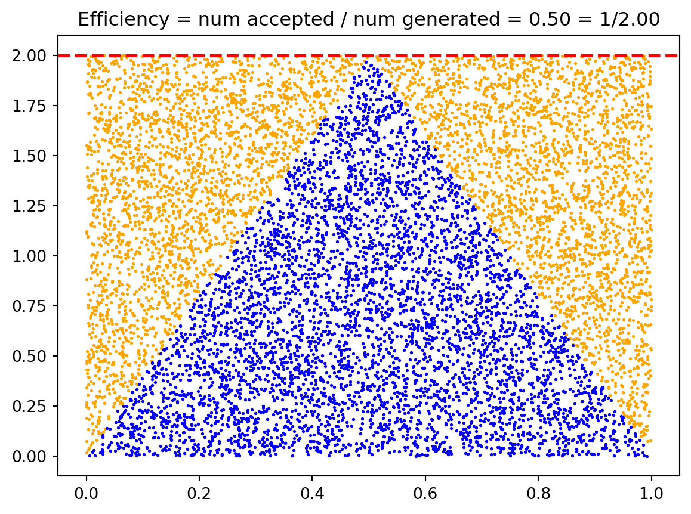
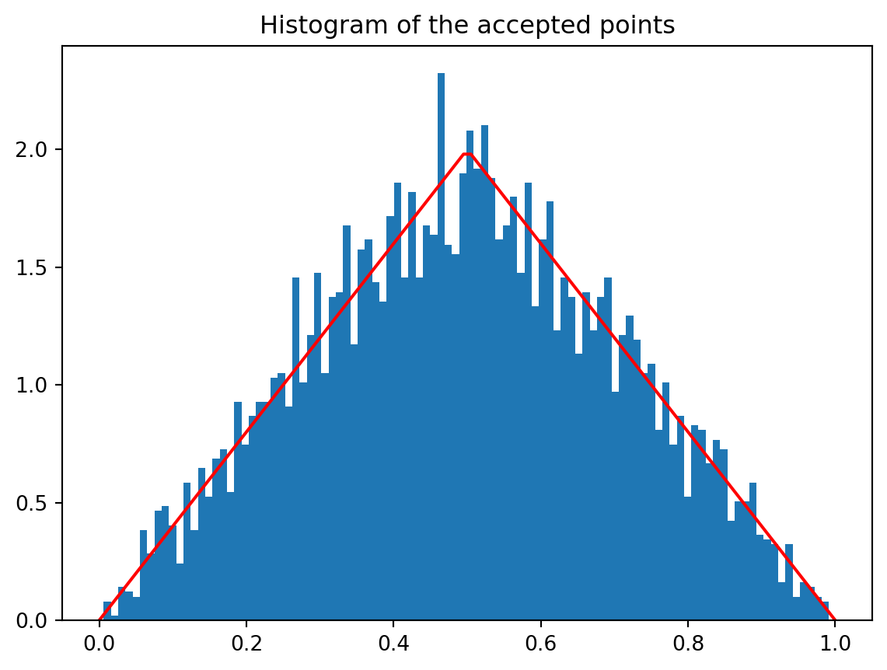
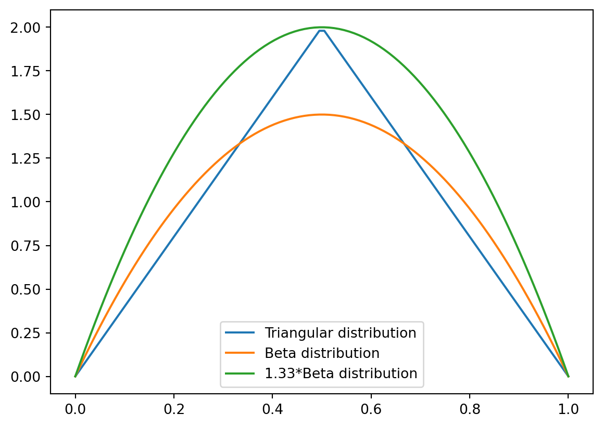
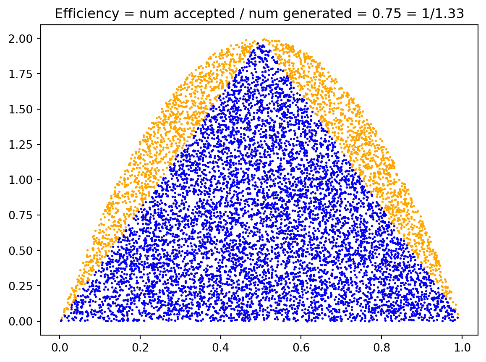
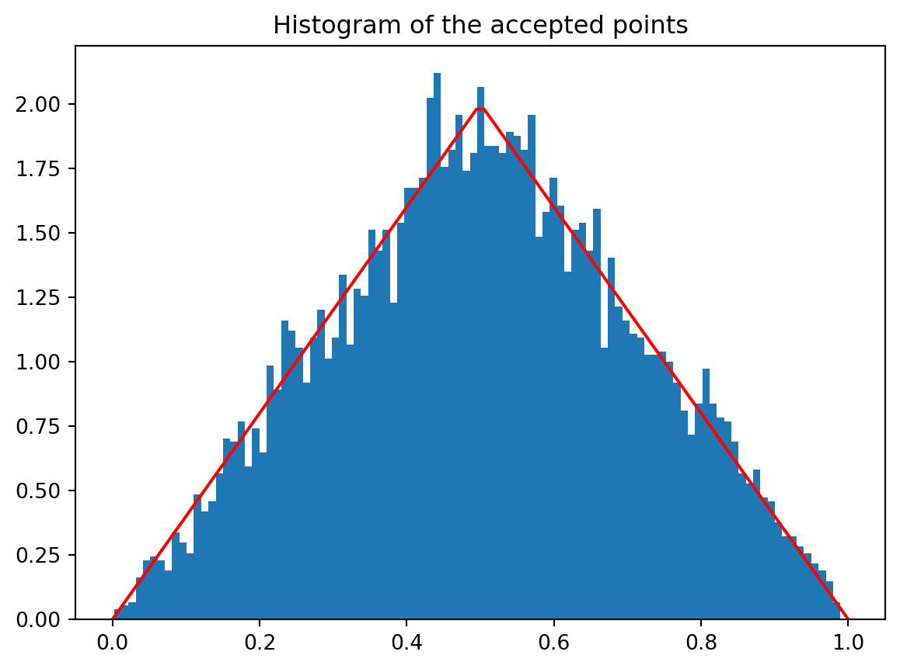

9 Rejection Sampling
The accept-reject Method, also called rejection sampling, is a simple and general technique for generating random variables. It is based on the idea of sampling from a simple distribution and then rejecting the samples that are not in the desired distribution. This method is particularly useful when the desired distribution is difficult to sample from directly, but it is easy to evaluate the density function of the distribution.
For the accept-reject method, we need to recall the following definitions: Let \(X\) and \(Y\) be discrete random variables.
The joint distribution of \(X\) and \(Y\) is given by the probability mass function
\[\begin{align*} f_{X,Y}(x,y) = \mathbb{P}(X=x, Y=y). \end{align*}\]
The marginal distribution of \(X\) is given by the probability mass function
\[\begin{align*} f_X(x) = \mathbb{P}(X=x) = \sum_{y} f_{X,Y}(x,y). \end{align*}\]
The conditional probability of \(X\) given \(Y\) is defined as
\[\begin{align*} f_{X|Y}(x|y) = \mathbb{P}(X=x|Y=y) = \frac{f_{X,Y}(x,y)}{f_Y(y)}. \end{align*}\]
When \(X\) and \(Y\) are continuous random variables, the definitions are similar, but we replace the probability mass functions with probability density functions.
The accept-reject method is based on the following theorem:
Theorem 9.1 Theorem (Marginal of Uniform): Let \(p(x)\) be a probability distribution. Let \(X, Y\) be two random variables having the joint distribution
\[ f_{X,Y}(x,y) = \begin{cases} 1, & \text{if } 0 \leq y \leq p(x), \\ 0, & \text{otherwise}. \end{cases} \tag{9.1}\]
Then the marginal distribution of \(X\) is given by \(p(x)\).
Proof. The marginal distribution of \(X\) is given by
\[\begin{align*} f_X(x) = \int_{-\infty}^{\infty} f_{X,Y}(x,y) dy = \int_{0}^{p(x)} dy = p(x). \end{align*}\]
\(\blacksquare\)
Thus in order to sample from a distribution \(p(x)\), we want to come up with a way to sample from the joint distribution given by (Equation 9.1). The accept-reject method is a way to do this.
9.1 Accept-Reject Method v1
Suppose \(p(x)\) is a probability distribution from which we want to sample. Suppose further that \(p(x)\) is supported over the interval \([a, b]\) and is bounded by \(M\), i.e., \(p(x) \leq M\) for all \(x \in [a, b]\).
The simplest version of the accept-reject method is as follows:
- Sample \(x\) uniformly from \([a, b]\).
- Sample \(y\) uniformly from \([0, M]\).
- If \(y \leq p(x)\), return \(x\); otherwise, go back to step 1.
Example 9.1 Consider the triangular distribution
\[ p(x) = \begin{cases} 4x, & \text{if } 0 \leq x \leq 0.5, \\ 4(1-x), & \text{if } 0.5 \leq x \leq 1 \\ 0, & \text{otherwise}. \end{cases} \tag{9.2}\]
We can use the accept-reject method to sample from this distribution. The density function is supported over \([0, 1]\) and is bounded by \(M = 2\).


9.1.1 Efficiency
Note that unlike the methods we have seen so far, the accept-reject method is probabilistic. The method generates uniformly distributed samples in the rectangle of area \(M(b-a)\), where \(M\) is the bound on \(p(x)\) and \([a, b]\) is the support of \(p(x)\). But because \(p(x)\) is a probability distribution, the area under the curve is 1. Thus the efficiency of the accept-reject method is given by
\[\begin{align*} \text{Efficiency} = \frac{1}{M(b-a)}. \end{align*}\]
If \(M\) is large i.e. the probability distribution has a large peak, then the efficiency of the accept-reject method is low.
9.2 Accept-Reject Method v2
A better version of the accept-reject method is obtained by replacing the enveloping rectangle with a enveloping curve. The closer the enveloping curve is to the distribution, the higher the efficiency of the method.
Definition 9.1 Majorizing Function: Let \(p(x)\) be a probability distribution. A function \(g(x)\) is said to majorize \(p(x)\) if \(g(x) \geq p(x)\) for all \(x\) in the support of \(p(x)\).
In the accept-reject jargon, we call \(p(x)\) the target distribution and \(g(x)\) the proposal distribution. Note that a probability distribution can never majorize another probability distribution as the area under the curve is 1. But we can scale the proposal distribution by a constant \(M\) such that \(Mg(x)\) majorizes \(p(x)\).
Example 9.2 Consider the triangular distribution given by (Equation 9.2). We saw that we can use the enveloping rectangle with \(M = 2\) to sample from this distribution. The Beta distribution \(\text{Beta}(2, 2)\) majorizes the triangular distribution with constant \(M = 4/3\).
\[\begin{align} \mathrm{Beta}(2, 2) = 6x(1-x), \quad x \in [0, 1]. \end{align}\]

In order to run the accept-reject method, we need to sample uniformly from the region between the graph of \(Mg(x)\) and the \(x\)-axis. This can be done using the following theorem:
Theorem 9.2 Majorizing Function: Let \(g(x)\) be a probability distribution and let \(M\) be a constant. Let \(X\) and \(Y\) be two random variables such that \(X \sim g(x)\) and \((Y | X = x)\sim U(0, Mg(x))\). Then the joint distribution of \(X\) and \(Y\) is uniform over the region between the graph of \(Mg(x)\) and the \(x\)-axis.
Proof. The conditional probability of \(Y\) given \(X\) is given by
\[\begin{align*} f_{Y|X}(y|x) = \begin{cases} \frac{1}{Mg(x)}, & \text{if } 0 \leq y \leq Mg(x), \\ 0, & \text{otherwise}. \end{cases} \end{align*}\]
Hence, the joint distribution of \(X\) and \(Y\) is given by
\[\begin{align*} f_{X,Y}(x,y) = f_{Y|X}(y|x) g(x) = \begin{cases} \frac{1}{M}, & \text{if } 0 \leq y \leq Mg(x), \\ 0, & \text{otherwise}. \end{cases} \end{align*}\]
Hence, the joint distribution is uniform over the region between the graph of \(Mg(x)\) and the \(x\)-axis.
Note that we are seeing the constant \(1/M\) instead of 1 as the area under the curve \(y = Mg(x)\) is \(M\) and not 1.
This gives us a way to sample from the majorizing function \(g(x)\). We can then use the accept-reject method to sample from the target distribution \(p(x)\). The algorithm is as follows:
- Sample \(x\) from \(g(x)\).
- Sample \(y\) uniformly from \([0, Mg(x)]\).
- If \(y \leq p(x)\), return \(x\); otherwise, go back to step 1.
Steps 2 and 3, are often rewritten as:
- Sample \(u\) uniformly from \([0, 1]\).
- If \(u \leq p(x)/(Mg(x))\), return \(x\); otherwise, go back to step 1.
Furthermore, taking a ratio of two small numbers can lead to numerical instability. We can avoid this by taking the logarithm of the ratio. The third step of the algorithm becomes:
- If \(\log(u) \leq \log(p(x)) - \log(Mg(x))\), return \(x\); otherwise, go back to step 1.
Example 9.3 Consider the triangular distribution given by (Equation 9.2). We saw that the Beta distribution \(\text{Beta}(2, 2)\) majorizes the triangular distribution. We can use the accept-reject method to sample from the triangular distribution using the Beta distribution as the proposal distribution. This improves the efficiency of the method from \(1/2\) to \(3/4\).


9.3 Normalizing Constant
We often find ourselves in a situation where we know the probability density function \(f\) up to a normalizing constant. For example, the gamma distribution has the density function
\[\begin{align} p(x) = c x^{\alpha - 1} e^{-x/\beta}, \end{align}\]
where \(c\) is a normalizing constant. We can compute \(c\) by integrating \(p(x)\) and setting the integral to 1. But as it turns out we do not need to know \(c\) to sample from the distribution. We can use the accept-reject method to sample from the distribution without knowing the normalizing constant. For this we need the following theorem:
Theorem 9.3 Normalizing Constant: Let \(p(x)\) be any function with a finite integral \(c\). Let \(X, Y\) be two random variables having the joint distribution
\[\begin{align} f_{X,Y}(x,y) = \begin{cases} \frac{1}{c}, & \text{if } 0 \leq y \leq p(x), \\ 0, & \text{otherwise}. \end{cases} \end{align}\]
Then the marginal distribution of \(X\) is given by \(p(x)/c\).
Proof. The marginal distribution of \(X\) is given by
\[\begin{align*} f_X(x) = \int_{-\infty}^{\infty} f_{X,Y}(x,y) dy = \int_{0}^{p(x)} \frac{1}{c} dy = \frac{p(x)}{c}. \end{align*}\]
\(\blacksquare\)
Thus sampling from a uniform distribution over the graph of \(p(x)\) and then finding the marginal distribution of \(X\) gives us a sample from the distribution \(p(x)/c\). This is a powerful result as it allows us to sample from a distribution without knowing the normalizing constant.
If we majorize \(cp(x)\) with a proposal distribution \(Mg(x)\), we can use the accept-reject method to sample from the distribution \(p(x)/c\) without knowing the normalizing constant. The efficiency in this case will be given by
\[\begin{align*} \text{Efficiency} = \frac{\text{area under the graph of } p(x)}{\text{area under the graph of } Mg(x)} = \frac{c}{M}. \end{align*}\]
Note that there is no loss in efficiency due to the unknown normalizing constant as if we can majorize \(p(x)\) with \(Mg(x)\), we can majorize the normalized proposal density \(p(x)/c\) by \(Mg(x)/c\), giving us the same efficiency.
9.4 Final remarks
If the proposal distribution is not close to the target distribution, then the efficiency of the method is low. In higher dimensions, it is difficult to come up with a good proposal distribution.
In higher dimensions, we need more sophisticated methods to sample from the target distribution such as Markov Chain Monte Carlo (MCMC) methods. We’ll see some of these methods such as Metropolis-Hastings and Gibbs sampling in the future.
Adaptive rejection sampling is another method that tries to find a good proposal distribution by using the samples generated so far. The idea is to use the samples to build a piecewise linear majorizing function. This function is then used as the proposal distribution for the accept-reject method. Because the cdf of a piecewise linear function is a quadratic function, it can be inverted easily. The method works for log-concave densities but has been extended to more general densities. This would be a good topic for a project.